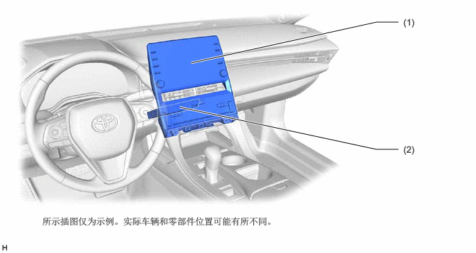
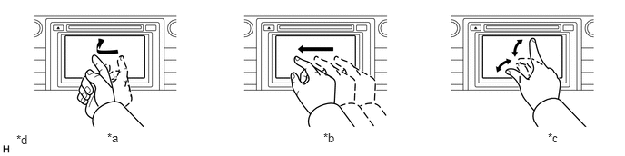
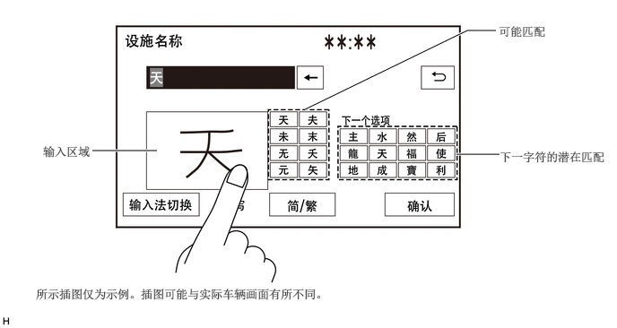
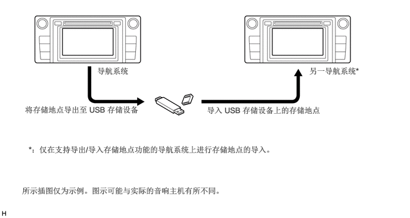

导航/多信息显示屏 导航系统/多信息系统 概述 概述
概要
导航系统由以下主要零部件组成。

| 零部件 | 概要 | |
|---|---|---|
| (1) | 收音机和显示屏接收器总成 | ·
内置有带电容式触摸面板的 9 英寸液晶显示屏 (LCD) 和多种操作操作，如音量开关和 TUNE 开关。 ·
与导航 ECU 协同操作导航系统并主要控制音频功能等。 |
| (2) | 导航 ECU | 与收音机和显示屏接收器总成协同控制导航系统并配备地图数据，IT 相关功能和导航等所需程序。 |
地图屏幕支持滑动、拖动和缩小/放大操作，可用于轻松改变地图比例尺、位置等。

| *a | 滑动操作 | *b | 拖动操作 |
| *c | 缩小/放大操作 | *d | 所示插图仅为示例。图示可能与实际的音响主机有所不同。 |
地图的显示根据用户的偏好在 5 种颜色之间改变。
对于高海拔区域，显示利用确定比例的梯度数据提高地图质量的真实地形图。
可以设定目的地检索菜单的偏好首页布局。
可使用连接车辆和 G-BOOK 通信中心的 G-BOOK 系统。
可使用蓝牙将通过智能手机上的应用程序搜索到的设施发送至收音机和显示屏接收器总成，并将其设为目的地或注册为存储地点。
导航系统支持用于存储地点的输出/输入功能。该功能通过 USB 存储设备将存储在收音机和显示屏接收器总成上的存储地点数据传输至另一导航系统（如另一收音机和显示屏接收器总成）。
导航系统将导航信息发送至组合仪表总成或仪表反射镜分总成。用户可在多信息显示屏或抬头显示装置上查看至目的地等指南针显示和逐向道路方向。
规格
| 多功能显示屏 | 9 英寸宽屏 LCD | |
| 导航计算机 | 先锋 | |
| 陀螺仪传感器 | 压电陶瓷元件 | |
| 地图数据库 | 内部存储在导航 ECU 中 | |
| 支持的语言 | 语音引导 | 英语、简体中文和繁体中文 |
| 语音识别 | 简体中文 | |
主要特征
手写输入功能
目的地检索期间，在进行设施名称（拼音）检索和地址/交叉路口检索时，除键盘输入法外，还支持手写输入法。可通过用手指在多功能显示屏的输入区域写入字符来输入字符。此外，该方法具有文字预测功能，用户开始在输入区域书写文字时可预测并显示可能匹配的文字。

语音识别系统
驾驶车辆时，用户可操作导航系统，如使用语音识别系统检索地址或 POI。
显示可通过语音识别操作的系统和指令以辅助不熟悉语音识别系统的用户。此外，配备指示灯，可显示语音识别状态，如通话时间或语音识别结果。
通过从菜单画面中选择系统并根据示例指令进行通话，用户可用最简洁的语音操作系统。
- 提示：
- ·
即使指令了当前画面上未显示的指令，系统也可根据用户指令进行操作。
·仅当选择简体中文作为显示语言时语音识别系统才可用。选择英文或繁体中文时，语音识别系统不可用。

输出/输入存储地点功能
可将收音机和显示屏接收器总成内存储的存储地点数据传送到另一导航系统，从而实现信息共享。

下列为多功能显示屏的主要功能。
| 功能 | 概要 | |
|---|---|---|
| 导航系统 | 导航系统利用全球定位系统 (GPS) 和存储在导航 ECU 上的地图数据分析车辆位置，并在画面上显示的地图上指示该位置。
另外，使用本系统可以注册存储地点并导航至目的地。 |
|
| 音频/视频系统 | 用于以下显示和控制：
·
收音机操作 ·
CD 播放机操作 ·
蓝牙兼容便携式播放机操作 ·
USB 存储设备操作 ·
iPod/iPhone 操作 ·
便携式音频播放机操作（AUX 型） |
|
| 免提系统 | 蓝牙兼容蜂窝电话注册到导航系统时，驾驶员可通过操作屏幕/方向盘装饰盖上的开关使用蜂窝电话拨打和接听电话，或进行免提通话。 | |
| 语音指令系统 | 根据语音指令操作导航、音响和免提系统。 | |
| 全景监视系统 | 根据车辆条件，如换档杆位置和车速等，通过车辆周围安装的 4 个电视摄像机总成拍摄的周围区域的组成图像或由各电视摄像机总成拍摄的图像显示车辆的鸟瞰图。 | |
| 丰田驻车辅助传感器系统 | 检测障碍物并将信息显示在多功能显示屏上以告知驾驶员。 | |
| 其他 | 油耗画面 | 显示每分钟的平均油耗、当前每分钟的油耗、过去的油耗记录和能量监视器等油耗信息。 |
| 保养信息 | 保养信息功能用于根据日历功能和已行驶距离提示驾驶员检查或更换以下项目的时间。
·
发动机机油：更换发动机机油 ·
机油滤清器：更换发动机机油滤清器 ·
换位：轮胎换位 ·
轮胎：更换轮胎 ·
蓄电池：更换蓄电池 ·
制动衬块：更换制动衬块 ·
刮水器：更换刮水器刮水片 ·
冷却液：更换发动机冷却液 ·
制动油：更换制动液 ·
变速器油：更换 ATF ·
维修：定期保养 ·
空气滤清器：更换空气滤清器 ·
个人信息：可在所提供项目外另创建新信息项目 |
|
| 语言选择 | 可更改画面按钮、弹出信息和语音引导的语言。
可使用英语、简体中文和繁体中文。 |
|
| 嘟声设定 | 可关闭嘟声。 | |
| 屏幕颜色主题设定 | 可更改屏幕颜色主题。 | |
| 画面设定 | 可从音响画面自动返回至导航画面。 | |
| 删除个人数据 | 可删除注册的或更改的个人设定或将其恢复为默认状态。
例如： ·
一般设定 ·
导航设定 ·
音响设定 ·
电话设定 |
|
| 屏幕按钮灵敏度 | 可更改电容式触摸屏的按钮灵敏度。 | |
| 画面调节 | 可调节画面亮度或对比度以适应周围环境的亮度。 | |
| 地图数据库更新 | 导航 ECU 中的地图数据库可以完成更新。 | |
| 诊断 | 菜单包括以下项目：
·
故障诊断 ·
系统检查 ·
存储检查 ·
诊断记录器 ·
MEU 检查 ·
功能检查/设定 ·
面板和方向盘开关 ·
触摸式开关 ·
扩音器检查 ·
车辆信号 ·
HF 音质设定 ·
摄像机设定 ·
MEU 检查 ·
服务信息 ·
MEU 信息 ·
版本信息 ·
产品信息 |
|